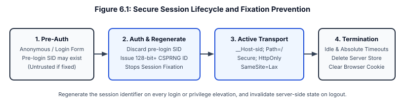

Chapter 6: Session Management and Cookie Security
Learning Objectives
By the end of this chapter, you should be able to:
- Trace the full session lifecycle from creation and renewal to idle/absolute expiration and logout invalidation.
- Configure HTTP cookie attributes (
Secure,HttpOnly,SameSite,Domain,Path, and__Host-prefixes) according to IETF RFC 6265. - Explain session fixation (MITRE CWE-384) and how regenerating the session identifier on privilege change prevents it.
- Compare opaque server-side session tokens against stateless JSON Web Tokens (JWTs) and identify common JWT pitfalls.
6.1 The Session Lifecycle
Because HTTP is stateless, an authenticated session bridges individual requests to a user identity. A secure session lifecycle has four phases:
- Creation: Generate a session identifier using a cryptographically secure pseudorandom number generator (CSPRNG) with at least 128 bits of entropy (avoid sequential IDs, timestamps, or predictable hashes of usernames).
- Binding and Transport: Deliver the identifier strictly in an HTTPS
Set-Cookieheader (or anAuthorization: Bearerheader for APIs), never in a URL query string where it leaks into browser history, server logs, andRefererheaders. - Renewal on Privilege Change: Whenever a user logs in, elevates privileges, or resets a password, invalidate the old session ID and issue a fresh one.
- Termination: Enforce both an idle timeout (e.g., 15–30 minutes of inactivity) and an absolute timeout (maximum lifetime regardless of activity). On explicit logout, delete the session record server-side and instruct the browser to clear the cookie.

6.2 Cookie Security Attributes
Under IETF RFC 6265 and the OWASP Session Management Cheat Sheet, every session cookie should explicitly set defensive attributes:
Set-Cookie: __Host-sid=7d9c2a...; Path=/; Secure; HttpOnly; SameSite=Lax| Attribute | Security Effect | Common Mistake |
|---|---|---|
Secure | Browser sends cookie only over HTTPS | Omitting Secure allows plaintext interception on HTTP links |
HttpOnly | Blocks document.cookie JavaScript access | Leaving it off exposes session tokens to XSS exfiltration |
SameSite=Lax or Strict | Restricts cross-site automatic cookie attachment (mitigates CSRF) | Using SameSite=None without necessity |
Domain | Controls subdomain scope; omit Domain to lock to exact host | Setting Domain=.example.com exposes the session to vulnerable subdomains |
Path=/ | Restricts URL path scope | Relying on Path as a security boundary (same-origin scripts can still read other paths) |
__Host- prefix | Browser enforces Secure, Path=/, and no Domain attribute | Allows subdomain cookie-tossing if omitted |
6.3 Session Fixation and Hijacking
Session Fixation
In a session fixation attack, the attacker obtains a valid pre-login session ID from the application (or sets one via a subdomain cookie or URL parameter), tricks the victim into authenticating with that fixed ID, and then reuses the same ID once it becomes authenticated.
Fix: Always regenerate the session identifier at the moment of authentication (req.session.regenerate() in Express, session_regenerate_id(true) in PHP) and discard the pre-login identifier.
Session Hijacking vs. Replay
Session hijacking occurs when an attacker steals an active token via network sniffing (missing TLS/Secure), XSS (HttpOnly missing), or exposed logs/URLs. Short lifetimes, TLS everywhere, and binding high-risk actions to fresh re-authentication reduce the blast radius.
6.4 Opaque Server-Side Sessions vs. JWTs
Many modern SPAs use JSON Web Tokens (JWTs) instead of server-side session stores. Both models have clear trade-offs:
- Opaque Server-Side Sessions: The cookie holds only a random key; user state stays on the server (Redis/database). Revocation is immediate: deleting the server record ends the session on the next request.
- Stateless JWTs: The token carries signed claims (
sub,role,exp). Because the server verifies the signature without a database lookup, revoking a compromised JWT beforeexpexpires requires a server-side denylist or short-lived access tokens paired with revocable refresh tokens.
Common JWT security mistakes include:
- Accepting
"alg": "none"or failing to pin the expected verification algorithm, allowing key-confusion attacks where an attacker signs a forged token withHS256using the server's publicRS256key as the HMAC secret. - Failing to validate
exp,iss, andaudclaims, or omitting ajti(JWT ID) when revocation is required. - Storing JWTs in
localStoragewhere any XSS payload can read them directly, instead of anHttpOnly,Secure,SameSitecookie.
Cookie Tossing and Subdomain Isolation
Because browsers allow a compromised or untrusted subdomain (blog.example.com) to set cookies scoped to a parent domain (Domain=.example.com), an attacker controlling a subdomain can overwrite a victim's session cookie on app.example.com (cookie tossing). Always omit Domain on sensitive session cookies and use the __Host- prefix so browsers reject any cookie set with a Domain attribute.
Key Takeaways
- Generate session identifiers with at least 128 bits of CSPRNG entropy and regenerate them on every login or privilege change.
- Harden cookies with
__Host-prefixes,Secure,HttpOnly, andSameSite=Lax(omittingDomain). - Stateless JWTs require short lifetimes, strict
alg/iss/aud/expvalidation, and a revocation strategy.
Applied Exercise
Write an HTTP Set-Cookie header for a high-sensitivity web application session and justify why each attribute (__Host-, Secure, HttpOnly, SameSite, Path) is configured as written.
Review Questions
- What is session fixation, and at what exact step in the authentication flow must the server prevent it?
- Why is omitting the
Domainattribute on a session cookie safer than settingDomain=.example.com? - Why is immediate logout revocation harder with stateless JWTs than with opaque server-side sessions?
- What three security guarantees does the
__Host-cookie prefix enforce?
References
- IETF RFC 6265: HTTP State Management Mechanism — https://www.rfc-editor.org/info/rfc6265/
- OWASP Cheat Sheet Series: Session Management — https://cheatsheetseries.owasp.org/cheatsheets/Session_Management_Cheat_Sheet.html
- OWASP Cheat Sheet Series: JSON Web Token for Java / JWT Security — https://cheatsheetseries.owasp.org/cheatsheets/JSON_Web_Token_for_Java_Cheat_Sheet.html
- OWASP WSTG v4.2: Testing for Session Management — https://wstg.owasp.org/v4.2/4-Web_Application_Security_Testing/06-Session_Management_Testing/